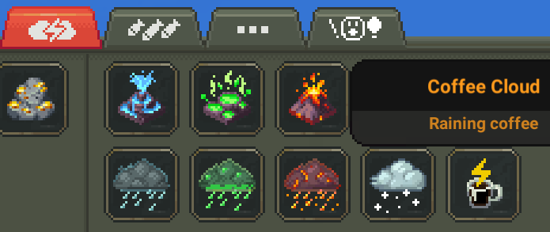
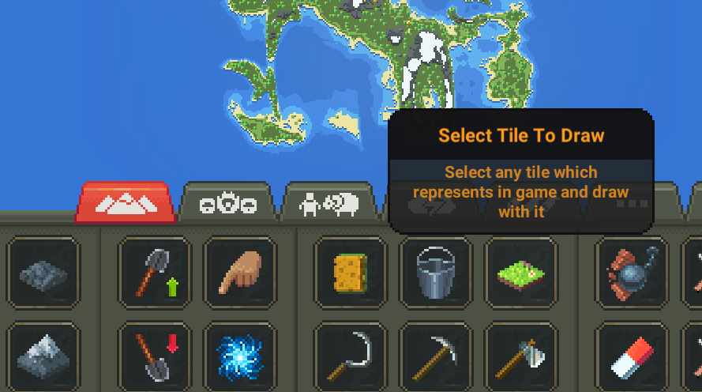

#
Example Mod
This is the Example Mod. It should be auto-installed with NCMS.
There is two new buttons:
- Coffee Cloud button, which activates new power — Coffee Clouds spawning
- Any Tile To Draw button, which shows window where you can select any tile presented in game and draw with it
using System;
using NCMS;
using UnityEngine;
using ReflectionUtility;
namespace ExampleMod{
[ModEntry]
class Main : MonoBehaviour{
void Awake(){
// Initializing Coffee Cloud power
CoffeeCloud.init();
// Initializing Tiles Window
TilesWindow.init();
// Initializing Tiles Button
TilesPowerButton.init();
}
}
}using System;
using NCMS;
using UnityEngine;
using ReflectionUtility;
namespace ExampleMod{
class CoffeeCloud{
// Initializing Coffee Cloud power
public static void init(){
// Creating new God Power
var spawnCoffeeCloud = new GodPower();
spawnCoffeeCloud.id = "coffeeCloudSpawn";
spawnCoffeeCloud.name = "coffeeCloudSpawn";
spawnCoffeeCloud.forceBrush = "sqr_0";
spawnCoffeeCloud.actionType = PowerActionType.Special;
// Action, which represents cloud spawning
spawnCoffeeCloud.click_action = new PowerAction(action_spawnCloud);
// We dont need to spawn many clouds just by holding
spawnCoffeeCloud.holdAction = false;
spawnCoffeeCloud.flashPixel = true;
// We dont need to select tool size
spawnCoffeeCloud.showToolSizes = false;
spawnCoffeeCloud.unselectWhenWindow = true;
// We dont need falling pixel
spawnCoffeeCloud.fallingPixel = false;
// Adding new god power to the AssetManager
AssetManager.powers.add(spawnCoffeeCloud);
// Creating new PowerButton
var button = NCMS.Utils.PowerButtons.CreateButton(
// Must be the same as spawnCoffeeCloud.id
"coffeeCloudSpawn",
// Using ingame sprite for our new button
Resources.Load<Sprite>("ui/icons/iconcoffee"),
"Coffee Cloud",
"Raining coffee",
Vector2.zero,
// Type of our power: GodPower
NCMS.Utils.ButtonType.GodPower
);
// Adding our button to the tab
NCMS.Utils.PowerButtons.AddButtonToTab(
// Our button
button,
// Nature tab
NCMS.Utils.PowerTab.Nature,
// Position of button in this tab. 489.6f by x is the position of snow cloud and + 36 offset. -18 by y means this button will be on second row
new Vector2(489.6f + 36, -18));
}
public static bool action_spawnCloud(WorldTile pTile = null, string pPower = "")
{
// We need some default cloud to use for create out own
GodPower godPower = AssetManager.powers.get("cloudAcid");
// Check tile for null just in case
if (pTile == null)
{
// Exit from method if null
return false;
}
var cloud = MapBox.instance.cloudController.getNext();
// Calling cloud.prepare(pTile.posV3, godPower.id) using reflections
var method = cloud.GetType().GetMethod("prepare", System.Reflection.BindingFlags.NonPublic | System.Reflection.BindingFlags.Instance, null, new[] { typeof(Vector3), typeof(string) }, null);
method.Invoke(cloud, new object[] { pTile.posV3, godPower.id });
// Setting coffee as drop id
Reflection.SetField<string>(cloud, "dropID", "coffee");
// Setting brown color for this cloud
cloud.sprRenderer.color = new Color(0.30f, 0.21f, 0.15f, 0.77f);
return true;
}
}
}using System;
using NCMS.Utils;
using UnityEngine;
using ReflectionUtility;
namespace ExampleMod{
class TilesPowerButton{
// Defining power and button as internal static, because we will use it in TilesWindow class
internal static GodPower power;
internal static PowerButton button;
// Initializing Tiles Button
public static void init(){
// Creating new drawing god's power by cloning prepared _terraformTiles power.
power = AssetManager.powers.clone("anyTile", "_terraformTiles");
power.name = "anyTile";
// Setting deep_ocean as default tile type
power.tileType = "deep_ocean";
// creating new PowerButton
button = PowerButtons.CreateButton(
// should be the same as power.id
"anyTile",
// using ingame sprite for our new button
Resources.Load<Sprite>("ui/icons/icontilesoil"),
"Select Tile To Draw",
"Select any tile which represents in game and draw with it",
Vector2.zero,
// Type of our power: GodPower.
ButtonType.GodPower,
/*
This button shows window, so basicaly it should be ButtonType.Click.
But it will be also power, so we need to make it with ButtonType.GodPower
Even if it will be ButtonType.GodPower, we still be able to set on click action
*/
null,
// On click action
OpenWindow
);
// Adding our button to the tab
PowerButtons.AddButtonToTab(
button,
// Drawings tab
PowerTab.Drawing,
// Position of button in this tab. 345.6f by x is the position of snow cloud and + 36 offset. 18 by y means this button will be on first row.
new Vector2(345.6f + 36, 18));
}
private static void OpenWindow(){
if (TilesWindow.pbsInstance.isPowerSelected("anyTile"))
{
// Showing tilesWindow window
Windows.ShowWindow("tilesWindow");
}
else
{
TilesWindow.pbsInstance.unselectAll();
}
}
}
}using System;
using NCMS.Utils;
using UnityEngine;
using System.Collections;
using System.Collections.Generic;
using System.Linq;
using System.Text.RegularExpressions;
using ReflectionUtility;
namespace ExampleMod{
class TilesWindow{
private static ScrollWindow window;
private static GameObject content;
// Defining as internal static, because we using it in TilesPowerButton class
internal static PowerButtonSelector pbsInstance;
// Initializing Tiles Window
public static void init(){
// Creating new window
window = Windows.CreateNewWindow("tilesWindow", "Select Tile");
// Activating Scroll View object
GameObject.Find("/Canvas/CanvasWindows/windows/" + window.name + "/Background/Scroll View").gameObject.SetActive(true);
// Fixing size to fit
var viewport = GameObject.Find($"/Canvas/CanvasWindows/windows/{window.name}/Background/Scroll View/Viewport");
var viewportRect = viewport.GetComponent<RectTransform>();
viewportRect.sizeDelta = new Vector2(0, 17);
// Getting Content object
content = GameObject.Find("/Canvas/CanvasWindows/windows/" + window.name + "/Background/Scroll View/Viewport/Content");
// Getting power button selector using reflections with ReflectionUtility
pbsInstance = Reflection.GetField(typeof(PowerButtonSelector), null, "instance") as PowerButtonSelector;
initTiles(); // Initializing tiles buttons inside window
}
private static void initTiles(){
// Getting tiles sprites from game resources
var sprites = Resources.LoadAll($"tilemap/tiles", typeof(Sprite)).Cast<Sprite>().ToList();
// Preparing list of valid sprites
var preparedTiles = new List<Sprite>();
foreach(var pair in TileType.dict){
var sprite = sprites.Find(c => c.name == $"{pair.Key}_0");
if(sprite == null){
continue;
}
preparedTiles.Add(sprite);
}
// To make our window content scrollable, we need to change its RectTransform.sizeDelta
var rect = content.GetComponent<RectTransform>();
rect.pivot = new Vector2(0, 1);
rect.sizeDelta = new Vector2(0, Mathf.Abs(getPositionByIndex(preparedTiles.Count).y) + 40);
// Adding tile buttons to window
int i = 0;
foreach(var pair in TileType.dict){
var sprite = preparedTiles.Find(c => c.name == $"{pair.Key}_0");
if(sprite == null){
continue;
}
createTileButton(pair.Key, sprite, i); // Creating tile button
i++;
}
}
private static void createTileButton(string tileName, Sprite sprite, int index){
// Making all first char in each string upper
string name = String.Join(" ", tileName.Split('_').ToList().Select(c => {c = $"{c[0].ToString().ToUpper()}{c.Substring(1)}"; return c;}).ToList());
// Creating new button
var button = PowerButtons.CreateButton(
tileName,
sprite,
name,
"",
// Getting button position by its index
getPositionByIndex(index),
ButtonType.Click,
content.transform,
// Setting on click callback with parameter
() => tileButtonClick(tileName)
);
}
/*
Getting button position by its index
By this formules we dont need any additional if-else constructions.
*/
private static Vector2 getPositionByIndex(int index){
// Starting position by x
float startX = 50;
// Starting position by y
float startY = -20;
// Buttons size + gap between
float sizeWithGap = 40;
// Buttons per row
int buttonsPerRow = 5;
// Calculating points
float positionX = startX + (index * sizeWithGap) - ((Mathf.Floor(index / buttonsPerRow) * sizeWithGap) * buttonsPerRow);
float positionY = startY - (Mathf.Floor(index / buttonsPerRow) * sizeWithGap);
return new Vector2(positionX, positionY);
}
// On click callback with parameter
private static void tileButtonClick(string tileName){
// When tile button clicked, hidding current window
window.clickHide();
// Setting new tile type
TilesPowerButton.power.tileType = tileName;
// Activating power
pbsInstance.clickPowerButton(TilesPowerButton.button);
}
}
}Result:


